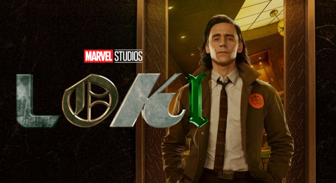
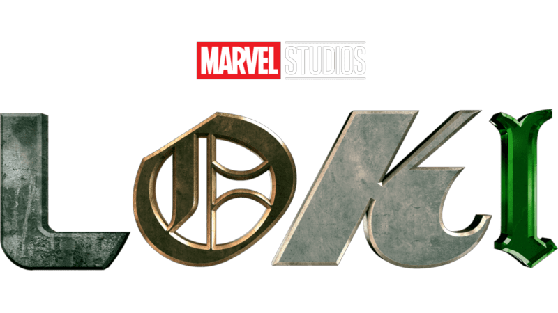
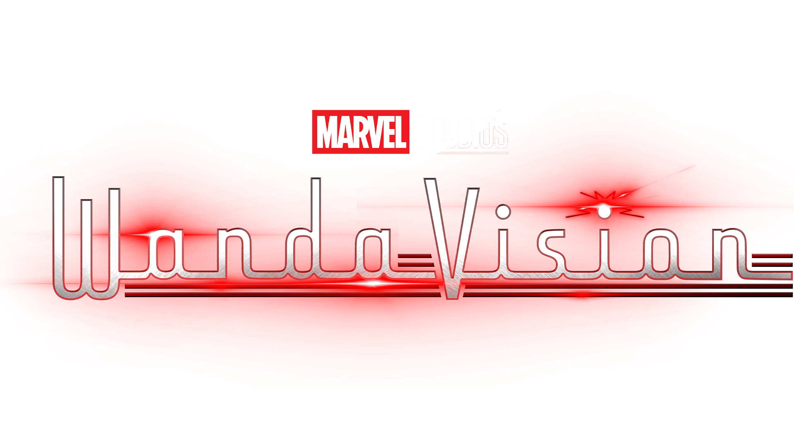

 
Loki
Un destin exceptionnel
Après avoir volé le Tesseract en 2012 à New York, dans la confusion du Casse temporel des Avengers, Loki se retrouve devant le Tribunal des Variations Anachroniques (TVA) dont il tente sans (...)